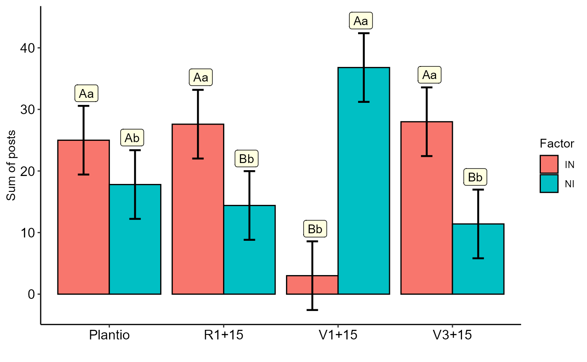

FAT2DBC.art.RdApply the aligned rank transform to a factorial model (with optional grouping terms). Usually done in preparation for a nonparametric analyses of variance on models with numeric or ordinal responses, which can be done by following up with anova.art.
FAT2DBC.art( f1, f2, block, response, decreasing = TRUE, xlab = " ", ylab = "Sum of posts", legend.title = "Factor", sup = NA, theme = theme_classic() )
| f1 | Numeric or complex vector with factor 1 levels |
|---|---|
| f2 | Numeric or complex vector with factor 2 levels |
| block | Numerical or complex vector with blocks |
| response | Numerical vector containing the response of the experiment. |
| decreasing | letter order (default is TRUE) |
| xlab | Treatments name (Accepts the expression() function) |
| ylab | Variable response name (Accepts the expression() function) |
| legend.title | legend title name |
| sup | Number of units above the standard deviation or average bar on the graph |
| theme | ggplot2 theme (default is theme_classic()) |
The function returns the Anova of aligned ranks, the multiple comparison test and the interaction graph.
Wobbrock, J. O., Findlater, L., Gergle, D., Higgins, J. J. (2011, May). The aligned rank transform for nonparametric factorial analyses using only anova procedures. In Proceedings of the SIGCHI conference on human factors in computing systems (pp. 143-146).
Kay, M., Wobbrock, J. O. (2020). Package ‘ARTool’.
Gabriel Danilo Shimizu, shimizu@uel.br
Leandro Simoes Azeredo Goncalves
Rodrigo Yudi Palhaci Marubayashi
#>#>#>#>#>#>#> #> ----------------------------------------------------------------- #> Analysis of Variance of Aligned Rank Transformed Data #> ----------------------------------------------------------------- #>#>#>#>#> FV F Df Df.res p-value #> fator1 fator1 4.411891 1 28 4.482053e-02 #> fator2 fator2 9.984510 3 28 1.212358e-04 #> fator1:fator2 fator1:fator2 36.502557 3 28 8.217384e-10#>#>#>#>#> #> #> ----------------------------------------------------------------- #> fator1 fator2 emmean SE df lower.CL upper.CL .group #> 2 IN Plantio 25.0 2.7377 32 19.423488 30.576512 A #> 1 NI Plantio 17.8 2.7377 32 12.223488 23.376512 A #> 4 IN R1+15 27.6 2.7377 32 22.023488 33.176512 A #> 3 NI R1+15 14.4 2.7377 32 8.823488 19.976512 B #> 5 NI V1+15 36.8 2.7377 32 31.223488 42.376512 A #> 6 IN V1+15 3.0 2.7377 32 -2.576512 8.576512 B #> 8 IN V3+15 28.0 2.7377 32 22.423488 33.576512 A #> 7 NI V3+15 11.4 2.7377 32 5.823488 16.976512 B #> #> #> ----------------------------------------------------------------- #> fator2 fator1 emmean SE df lower.CL upper.CL .group #> 3 V3+15 IN 28.0 2.7377 32 22.423488 33.576512 a #> 1 R1+15 IN 27.6 2.7377 32 22.023488 33.176512 a #> 2 Plantio IN 25.0 2.7377 32 19.423488 30.576512 a #> 4 V1+15 IN 3.0 2.7377 32 -2.576512 8.576512 b #> 8 V1+15 NI 36.8 2.7377 32 31.223488 42.376512 a #> 6 Plantio NI 17.8 2.7377 32 12.223488 23.376512 b #> 5 R1+15 NI 14.4 2.7377 32 8.823488 19.976512 b #> 7 V3+15 NI 11.4 2.7377 32 5.823488 16.976512 b